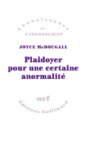
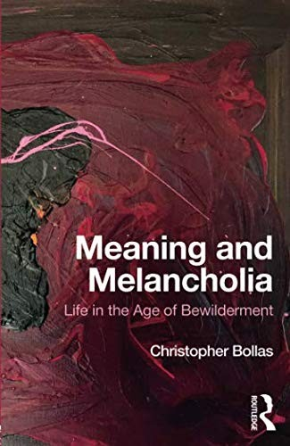

56:20 · 11 OPERE
Dalla normopatia all'idiopatia.
Il filo del discorso
Dr Divago usa il termine normopatia per interrogare una adesione alle regole che rinuncia a chiedersi perché siano giuste. La parola idiopatia del titolo è dichiaratamente un gioco polemico del relatore, distinto dal significato medico di idiopatico. Il percorso mette a confronto definizioni psicoanalitiche, esempi di conformismo e responsabilità personale. Un ricordo familiare del nonno antifascista e della continuità degli apparati dopo la guerra rende concreto, nella sua testimonianza, il problema di chi si adegua prima a un regime e poi alla sua scomparsa. Il discorso passa da don Milani e dalla banalità del male alla storia della normopatia in Wulff e McDougall. Meaning and Melancholia di Christopher Bollas introduce un altro asse: la perdita del rapporto con la propria interiorità. Lutto e melanconia di Freud e La separazione degli amanti di Igor Caruso servono a discutere forme di perdita e di elaborazione. Sono riferimenti teorici e letture del relatore, non strumenti per diagnosticare come psicotica o autistica una persona attraverso una opinione politica o un comportamento osservato da lontano. Il tema diventa poi quello delle parole pubbliche. Dr Divago critica slogan, formati brevi e rappresentazioni che a suo giudizio impediscono di elaborare i contenuti. Il riferimento a Gardner e Katie Davis suggerisce una ricerca sul rapporto fra giovani, creatività e media digitali. Una battuta attribuita a Longanesi introduce la possibilità della satira: una stessa frase può essere letta come celebrazione da chi vuole aderire e come critica da chi ne coglie il paradosso. Le analogie che il relatore propone con i comportamenti durante la pandemia restano sue interpretazioni. La seconda metà applica questa critica alla comunicazione sanitaria del 2020–21. Sono discussi cambiamenti dei messaggi sulle mascherine, uno studio CDC sul loro adattamento al viso, varianti virali e confronti con la influenza del 1918. Il modello delle risposte alla perdita di Kübler-Ross diventa, per Dr Divago, una ipotesi sul modo in cui una società accetta restrizioni; il richiamo ad Agent Orange esemplifica il possibile uso dannoso di una scoperta. Questi paralleli non provano una regia politica coordinata né invalidano da soli evidenze e misure sanitarie. Il caso di Christoph Lütge nel consiglio etico bavarese riporta infine alla libertà del dissenso. La conclusione difende la possibilità di ragionare contro il conformismo, lasciando però da verificare separatamente le accuse e le affermazioni scientifiche che il discorso contiene.
I libri nel discorso
La dittatura del conformismo
Copertina: Intestazione nativa della pagina dell’autore: titolo La dittatura del conformismo, autore Benedetto Tangocci e data web 21 settembre 2020. È il solo header della pagina, non la copertina di un libro, non il fascicolo di Piesse e non l’articolo integrale. Data e numero del fascicolo non sono determinati.
Intestazione della pagina originale; la data visibile riguarda la pagina web e non è attribuita al fascicolo della rivista.
Nel passaggio: Benedetto Tangocci e La dittatura del conformismo, descritto oralmente come saggio; la fonte primaria dell’autore ne precisa la natura di articolo Piesse. Il nome ricorre anche in altri passaggi.
Passaggio 2:56 ↗ · Fonti e libro ↗La banalità del male. Eichmann a Gerusalemme
Copertina: Feltrinelli · Universale Economica Saggi · 2023
Immagine autentica dell’opera, controllata visivamente; l’edizione di riferimento non è attribuita al filmato.
La banalità del male è esplicita nel riferimento a Dejours e nella successiva critica a Hannah Arendt.
Passaggio 13:00 ↗ · Fonti e libro ↗
L’obbedienza non è più una virtù. Documenti del processo di don Milani
Copertina: Copertina ufficiale Libreria Editrice Fiorentina, ISBN 9788889264041, 96 pagine. Titolo verde su fondo bianco e sottotitolo Documenti del processo di don Milani. La scheda editoriale non data una specifica impressione di questa immagine; non è certificata come prima edizione 1965.
Immagine autentica dell’opera, controllata visivamente; l’edizione di riferimento non è attribuita al filmato.
Don Milani e L’obbedienza non è più una virtù espliciti; il 1965 riguarda la vicenda delle lettere.
Passaggio 13:47 ↗ · Fonti e libro ↗Psychiatrie und Klassengesellschaft. Zur Begriffs- und Sozialkritik der Psychiatrie und Medizin
Copertina: Fotografia autentica intera di un esemplare Fischer Athenäum Taschenbücher, con titolo e autore sul piatto e serie FAT 4005 sul dorso. ZVAB associa questa immagine ISBN alla seconda edizione 1977; l’opera è documentata nei cataloghi dal 1972. Non è certificata come fotografia della prima edizione o della copia mostrata nel video.
Immagine bibliografica di riferimento dell’opera; la distinzione fra data dell’opera 1972 e scheda della seconda edizione 1977 è conservata.
Nel passaggio: nome Wulff deformato dalla trascrizione automatica, seguito da Psichiatria e società di classe e dal 1972. Titolo tedesco ricostruito bibliograficamente dalla resa italiana; nessuna edizione italiana viene asserita.
Passaggio 15:48 ↗ · Fonti e libro ↗
Plaidoyer pour une certaine anormalité (A favore di una certa anormalità)
Copertina: Immagine ufficiale Gallimard, Connaissance de l’inconscient, 17 maggio 1978, ISBN 9782070299447. Titolo viola su fondo bianco; immagine piccola ma intera e leggibile. La pagina editoriale attuale e i cataloghi storici differiscono sulla paginazione; la tiratura precisa non è identificata.
Immagine autentica dell’opera, controllata visivamente; l’edizione di riferimento non è attribuita al filmato.
McDougall,1978 e la resa italiana del titolo A favore/In difesa di una certa anormalità rimandano al Plaidoyer originale.
Passaggio 16:28 ↗ · Fonti e libro ↗
Meaning and Melancholia: Life in the Age of Bewilderment
Copertina: Copertina Routledge della edizione 2018, ISBN 9781138497535, acquisita dal servizio OpenLibrary. Disegno astratto bordeaux e nero, titolo e autore bianchi. La edizione è una immagine di riferimento, non identificazione visiva della copia del relatore.
Immagine autentica dell’opera, controllata visivamente; l’edizione di riferimento non è attribuita al filmato.
Christopher Bollas e Meaning and Melancholia sono riconoscibili sotto le forme fonetiche trascrizione automatica.
Passaggio 17:14 ↗ · Fonti e libro ↗
Lutto e melanconia
Raccolta Metapsicologia · contiene Lutto e melanconia: Copertina della raccolta Metapsicologia, Bollati Boringhieri, Biblioteca, edizione iniziata nel 1978, ISBN 9788833902258, traduzione di Renata Colorni. Contiene Lutto e melanconia; il verde e il labirinto circolare non sono la copertina di una prima edizione autonoma del saggio.
Immagine autentica dell’opera, controllata visivamente; l’edizione di riferimento non è attribuita al filmato.
Freud e Lutto e melanconia sono espliciti, con un secondo richiamo a1234.
Passaggio 17:52 ↗ · Fonti e libro ↗La separazione degli amanti. Una fenomenologia della morte
Copertina della traduzione spagnola, 2020: Siglo XXI · La separación de los amantes · edizione spagnola, 2020
Copertina autentica della traduzione spagnola, dall’editore Siglo XXI, ISBN 9786070310959. L’edizione italiana Einaudi 1988, tradotta da Ada Cinato, è un riferimento bibliografico distinto e non è l’immagine qui riprodotta.
Igor Caruso e La separazione degli amanti sono espliciti nel passaggio sulla perdita amorosa.
Passaggio 19:48 ↗ · Fonti e libro ↗Lutto e melanconia
Raccolta Metapsicologia · contiene Lutto e melanconia: Copertina della raccolta Metapsicologia, Bollati Boringhieri, Biblioteca, edizione iniziata nel 1978, ISBN 9788833902258, traduzione di Renata Colorni. Contiene Lutto e melanconia; il verde e il labirinto circolare non sono la copertina di una prima edizione autonoma del saggio.
Immagine autentica dell’opera, controllata visivamente; l’edizione di riferimento non è attribuita al filmato.
Il saggio di Freud ritorna nella spiegazione della impostazione ripresa da Bollas.
Passaggio 20:34 ↗ · Fonti e libro ↗The App Generation: How Today’s Youth Navigate Identity, Intimacy, and Imagination in a Digital World
Identificazione probabile
Copertina: Copertina ufficiale Yale University Press, edizione tascabile 30 settembre 2014 con nuova prefazione, ISBN 9780300209341. La prima pubblicazione risale al 2013. Immagine dell’editore, titolo e nomi leggibili; titolo associato al passaggio con identificazione probabile.
Immagine autentica dell’opera, controllata visivamente; l’edizione di riferimento non è attribuita al filmato.
Gardner e Katie Davis, nome deformato nella trascrizione automatica, accompagnano il richiamo alla ricerca su giovani e creatività: titolo The App Generation probabile, non pronunciato.
Passaggio 27:05 ↗ · Fonti e libro ↗
Alice nel paese delle meraviglie
Identificazione probabile
Copertina: BUR / Rizzoli · 2012
Immagine autentica dell’opera, controllata visivamente; l’edizione di riferimento non è attribuita al filmato.
Alice nel paese delle meraviglie è nominata. La battuta sull’impossibile non è certificata come appartenente al romanzo; il richiamo all’opera è distinto dalla attribuzione della singola frase.
Passaggio 55:13 ↗ · Fonti e libro ↗